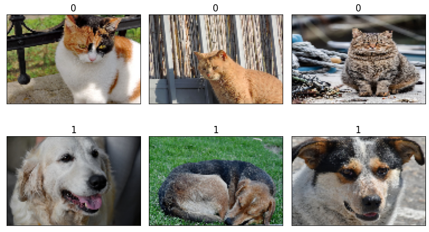
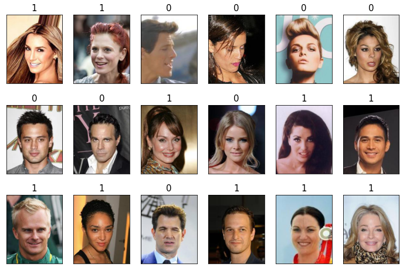
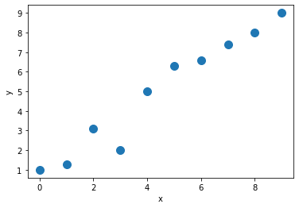
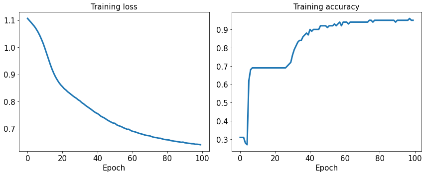
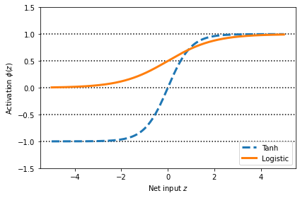
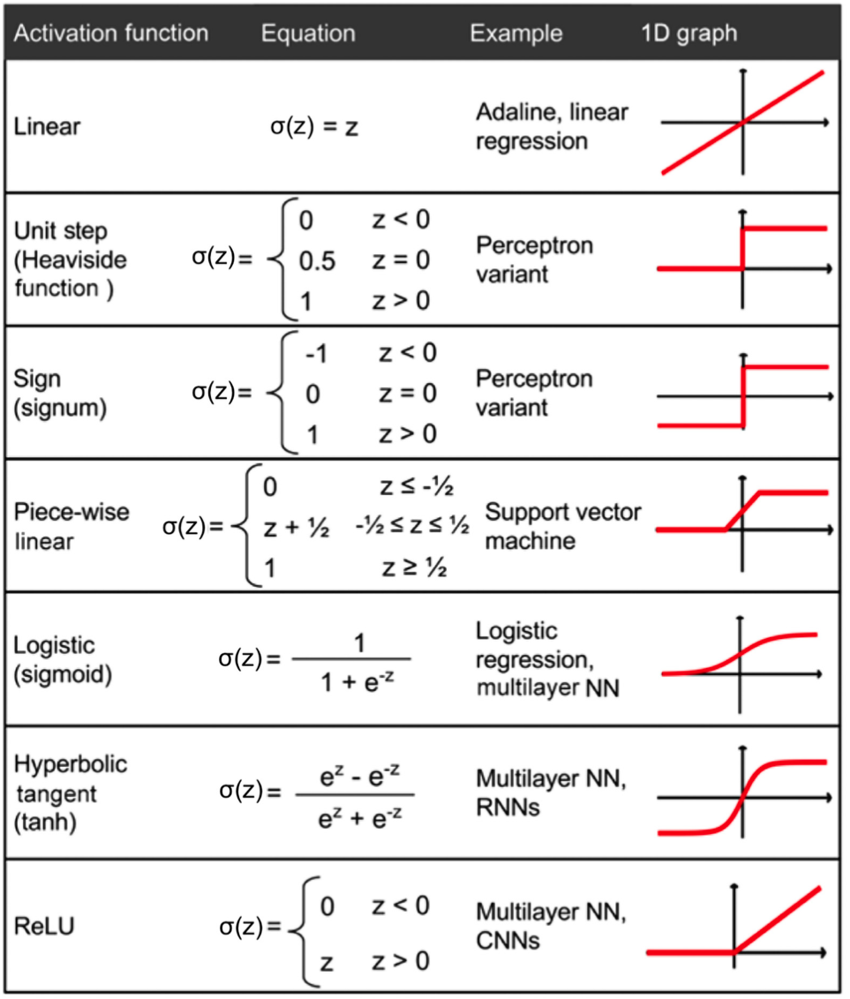

Parallelizing Neural Network Training with PyTorch
Contents
Parallelizing Neural Network Training with PyTorch¶
Note that the optional watermark extension is a small IPython notebook plugin that I developed to make the code reproducible. You can just skip the following line(s).
from IPython.display import Image as IPythonImage
PyTorch and training performance¶
What is PyTorch?¶
IPythonImage(filename='figures/1-01.png', width=500)

How we will learn PyTorch¶
First steps with PyTorch¶
Installing PyTorch¶
import torch
import numpy as np
print('PyTorch version:', torch.__version__)
np.set_printoptions(precision=3)
PyTorch version: 1.11.0
Creating tensors in PyTorch¶
t_a = torch.tensor([1, 2, 3])
t_b = torch.from_numpy(np.array([4, 5, 6], dtype=np.int32))
print(t_a)
print(t_b)
tensor([1, 2, 3])
tensor([4, 5, 6], dtype=torch.int32)
torch.is_tensor(t_a)
True
t_ones = torch.ones(2, 3)
t_ones.shape
torch.Size([2, 3])
print(t_ones)
tensor([[1., 1., 1.],
[1., 1., 1.]])
rand_tensor = torch.rand(2,3)
print(rand_tensor)
tensor([[0.4467, 0.4972, 0.6300],
[0.3175, 0.3196, 0.9252]])
Manipulating the data type and shape of a tensor¶
t_a_new = t_a.to(torch.int64)
print(t_a_new.dtype)
torch.int64
t = torch.rand(3, 5)
t_tr = torch.transpose(t, 0, 1)
print(t.shape, ' --> ', t_tr.shape)
torch.Size([3, 5]) --> torch.Size([5, 3])
t = torch.zeros(30)
t_reshape = t.reshape(5, 6)
print(t_reshape.shape)
torch.Size([5, 6])
t = torch.zeros(1, 2, 1, 4, 1)
t_sqz = torch.squeeze(t, 2)
print(t.shape, ' --> ', t_sqz.shape)
torch.Size([1, 2, 1, 4, 1]) --> torch.Size([1, 2, 4, 1])
t
tensor([[[[[0.],
[0.],
[0.],
[0.]]],
[[[0.],
[0.],
[0.],
[0.]]]]])
Applying mathematical operations to tensors¶
torch.manual_seed(1)
t1 = 2 * torch.rand(5, 2) - 1
t2 = torch.normal(mean=0, std=1, size=(5, 2))
t1
tensor([[ 0.5153, -0.4414],
[-0.1939, 0.4694],
[-0.9414, 0.5997],
[-0.2057, 0.5087],
[ 0.1390, -0.1224]])
t3 = torch.multiply(t1, t2)
print(t3)
tensor([[ 0.4426, -0.3114],
[ 0.0660, -0.5970],
[ 1.1249, 0.0150],
[ 0.1569, 0.7107],
[-0.0451, -0.0352]])
t4 = torch.mean(t1, axis=0)
print(t4)
tensor([-0.1373, 0.2028])
t5 = torch.matmul(t1, torch.transpose(t2, 0, 1))
print(t5)
tensor([[ 0.1312, 0.3860, -0.6267, -1.0096, -0.2943],
[ 0.1647, -0.5310, 0.2434, 0.8035, 0.1980],
[-0.3855, -0.4422, 1.1399, 1.5558, 0.4781],
[ 0.1822, -0.5771, 0.2585, 0.8676, 0.2132],
[ 0.0330, 0.1084, -0.1692, -0.2771, -0.0804]])
t6 = torch.matmul(torch.transpose(t1, 0, 1), t2)
print(t6)
tensor([[ 1.7453, 0.3392],
[-1.6038, -0.2180]])
norm_t1 = torch.linalg.norm(t1, ord=2, dim=1)
print(norm_t1)
tensor([0.6785, 0.5078, 1.1162, 0.5488, 0.1853])
np.sqrt(np.sum(np.square(t1.numpy()), axis=1))
array([0.678, 0.508, 1.116, 0.549, 0.185], dtype=float32)
Split, stack, and concatenate tensors¶
torch.manual_seed(1)
t = torch.rand(6)
print(t)
t_splits = torch.chunk(t, 3)
[item.numpy() for item in t_splits]
tensor([0.7576, 0.2793, 0.4031, 0.7347, 0.0293, 0.7999])
[array([0.758, 0.279], dtype=float32),
array([0.403, 0.735], dtype=float32),
array([0.029, 0.8 ], dtype=float32)]
torch.manual_seed(1)
t = torch.rand(5)
print(t)
t_splits = torch.split(t, split_size_or_sections=[3, 2])
[item.numpy() for item in t_splits]
tensor([0.7576, 0.2793, 0.4031, 0.7347, 0.0293])
[array([0.758, 0.279, 0.403], dtype=float32),
array([0.735, 0.029], dtype=float32)]
A = torch.ones(3)
B = torch.zeros(2)
C = torch.cat([A, B], axis=0)
print(C)
tensor([1., 1., 1., 0., 0.])
A = torch.ones(3)
B = torch.zeros(3)
S = torch.stack([A, B], axis=1)
print(S)
tensor([[1., 0.],
[1., 0.],
[1., 0.]])
Building input pipelines in PyTorch¶
Creating a PyTorch DataLoader from existing tensors¶
from torch.utils.data import DataLoader
t = torch.arange(6, dtype=torch.float32)
data_loader = DataLoader(t)
for item in data_loader:
print(item)
tensor([0.])
tensor([1.])
tensor([2.])
tensor([3.])
tensor([4.])
tensor([5.])
data_loader = DataLoader(t, batch_size=3, drop_last=False)
for i, batch in enumerate(data_loader, 1):
print(f'batch {i}:', batch)
batch 1: tensor([0., 1., 2.])
batch 2: tensor([3., 4., 5.])
Combining two tensors into a joint dataset¶
from torch.utils.data import Dataset
class JointDataset(Dataset):
def __init__(self, x, y):
self.x = x
self.y = y
def __len__(self):
return len(self.x)
def __getitem__(self, idx):
return self.x[idx], self.y[idx]
torch.manual_seed(1)
t_x = torch.rand([4, 3], dtype=torch.float32)
t_y = torch.arange(4)
joint_dataset = JointDataset(t_x, t_y)
# Or use TensorDataset directly
from torch.utils.data import TensorDataset
joint_dataset = TensorDataset(t_x, t_y)
for example in joint_dataset:
print(' x: ', example[0],
' y: ', example[1])
x: tensor([0.7576, 0.2793, 0.4031]) y: tensor(0)
x: tensor([0.7347, 0.0293, 0.7999]) y: tensor(1)
x: tensor([0.3971, 0.7544, 0.5695]) y: tensor(2)
x: tensor([0.4388, 0.6387, 0.5247]) y: tensor(3)
Shuffle, batch, and repeat¶
torch.manual_seed(1)
data_loader = DataLoader(dataset=joint_dataset, batch_size=2, shuffle=True)
for i, batch in enumerate(data_loader, 1):
print(f'batch {i}:', 'x:', batch[0],
'\n y:', batch[1])
for epoch in range(2):
print(f'epoch {epoch+1}')
for i, batch in enumerate(data_loader, 1):
print(f'batch {i}:', 'x:', batch[0],
'\n y:', batch[1])
batch 1: x: tensor([[0.3971, 0.7544, 0.5695],
[0.7576, 0.2793, 0.4031]])
y: tensor([2, 0])
batch 2: x: tensor([[0.7347, 0.0293, 0.7999],
[0.4388, 0.6387, 0.5247]])
y: tensor([1, 3])
epoch 1
batch 1: x: tensor([[0.7576, 0.2793, 0.4031],
[0.3971, 0.7544, 0.5695]])
y: tensor([0, 2])
batch 2: x: tensor([[0.7347, 0.0293, 0.7999],
[0.4388, 0.6387, 0.5247]])
y: tensor([1, 3])
epoch 2
batch 1: x: tensor([[0.4388, 0.6387, 0.5247],
[0.3971, 0.7544, 0.5695]])
y: tensor([3, 2])
batch 2: x: tensor([[0.7576, 0.2793, 0.4031],
[0.7347, 0.0293, 0.7999]])
y: tensor([0, 1])
Creating a dataset from files on your local storage disk¶
import pathlib
imgdir_path = pathlib.Path('cat_dog_images')
file_list = sorted([str(path) for path in imgdir_path.glob('*.jpg')])
print(file_list)
['cat_dog_images/cat-01.jpg', 'cat_dog_images/cat-02.jpg', 'cat_dog_images/cat-03.jpg', 'cat_dog_images/dog-01.jpg', 'cat_dog_images/dog-02.jpg', 'cat_dog_images/dog-03.jpg']
import matplotlib.pyplot as plt
import os
from PIL import Image
fig = plt.figure(figsize=(10, 5))
for i, file in enumerate(file_list):
img = Image.open(file)
print('Image shape: ', np.array(img).shape)
ax = fig.add_subplot(2, 3, i+1)
ax.set_xticks([]); ax.set_yticks([])
ax.imshow(img)
ax.set_title(os.path.basename(file), size=15)
# plt.savefig('figures/1-02.png')
plt.tight_layout()
plt.show()
Image shape: (900, 1200, 3)
Image shape: (900, 1200, 3)
Image shape: (900, 742, 3)
Image shape: (800, 1200, 3)
Image shape: (800, 1200, 3)
Image shape: (900, 1200, 3)
labels = [1 if 'dog' in os.path.basename(file) else 0
for file in file_list]
print(labels)
[0, 0, 0, 1, 1, 1]
class ImageDataset(Dataset):
def __init__(self, file_list, labels):
self.file_list = file_list
self.labels = labels
def __getitem__(self, index):
file = self.file_list[index]
label = self.labels[index]
return file, label
def __len__(self):
return len(self.labels)
image_dataset = ImageDataset(file_list, labels)
for file, label in image_dataset:
print(file, label)
cat_dog_images/cat-01.jpg 0
cat_dog_images/cat-02.jpg 0
cat_dog_images/cat-03.jpg 0
cat_dog_images/dog-01.jpg 1
cat_dog_images/dog-02.jpg 1
cat_dog_images/dog-03.jpg 1
import torchvision.transforms as transforms
class ImageDataset(Dataset):
def __init__(self, file_list, labels, transform=None):
self.file_list = file_list
self.labels = labels
self.transform = transform
def __getitem__(self, index):
img = Image.open(self.file_list[index])
if self.transform is not None:
img = self.transform(img)
label = self.labels[index]
return img, label
def __len__(self):
return len(self.labels)
img_height, img_width = 80, 120
transform = transforms.Compose([
transforms.ToTensor(),
transforms.Resize((img_height, img_width)),
])
image_dataset = ImageDataset(file_list, labels, transform)
fig = plt.figure(figsize=(10, 6))
for i, example in enumerate(image_dataset):
ax = fig.add_subplot(2, 3, i+1)
ax.set_xticks([]); ax.set_yticks([])
ax.imshow(example[0].numpy().transpose((1, 2, 0)))
ax.set_title(f'{example[1]}', size=15)
plt.tight_layout()
# plt.savefig('figures/1-03.png')
plt.show()

Fetching available datasets from the torchvision.datasets library¶
from torchvision import datasets
image_path = '../../data-torch/'
celeba_dataset = datasets.CelebA(image_path, split='train', target_type='attr', download=True)
assert isinstance(celeba_dataset, torch.utils.data.Dataset)
Files already downloaded and verified
---------------------------------------------------------------------------
FileNotFoundError Traceback (most recent call last)
/Users/integzz/Documents/blog-stats/pytorch/1-intro-pytorch.ipynb Cell 56' in <cell line: 2>()
<a href='vscode-notebook-cell:/Users/integzz/Documents/blog-stats/pytorch/1-intro-pytorch.ipynb#ch0000055?line=0'>1</a> image_path = '../../data-torch/'
----> <a href='vscode-notebook-cell:/Users/integzz/Documents/blog-stats/pytorch/1-intro-pytorch.ipynb#ch0000055?line=1'>2</a> celeba_dataset = datasets.CelebA(image_path, split='train', target_type='attr', download=True)
<a href='vscode-notebook-cell:/Users/integzz/Documents/blog-stats/pytorch/1-intro-pytorch.ipynb#ch0000055?line=3'>4</a> assert isinstance(celeba_dataset, torch.utils.data.Dataset)
File /opt/homebrew/Caskroom/mambaforge/base/envs/kaggle/lib/python3.10/site-packages/torchvision/datasets/celeba.py:104, in CelebA.__init__(self, root, split, target_type, transform, target_transform, download)
<a href='file:///opt/homebrew/Caskroom/mambaforge/base/envs/kaggle/lib/python3.10/site-packages/torchvision/datasets/celeba.py?line=95'>96</a> split_map = {
<a href='file:///opt/homebrew/Caskroom/mambaforge/base/envs/kaggle/lib/python3.10/site-packages/torchvision/datasets/celeba.py?line=96'>97</a> "train": 0,
<a href='file:///opt/homebrew/Caskroom/mambaforge/base/envs/kaggle/lib/python3.10/site-packages/torchvision/datasets/celeba.py?line=97'>98</a> "valid": 1,
<a href='file:///opt/homebrew/Caskroom/mambaforge/base/envs/kaggle/lib/python3.10/site-packages/torchvision/datasets/celeba.py?line=98'>99</a> "test": 2,
<a href='file:///opt/homebrew/Caskroom/mambaforge/base/envs/kaggle/lib/python3.10/site-packages/torchvision/datasets/celeba.py?line=99'>100</a> "all": None,
<a href='file:///opt/homebrew/Caskroom/mambaforge/base/envs/kaggle/lib/python3.10/site-packages/torchvision/datasets/celeba.py?line=100'>101</a> }
<a href='file:///opt/homebrew/Caskroom/mambaforge/base/envs/kaggle/lib/python3.10/site-packages/torchvision/datasets/celeba.py?line=101'>102</a> split_ = split_map[verify_str_arg(split.lower(), "split",
<a href='file:///opt/homebrew/Caskroom/mambaforge/base/envs/kaggle/lib/python3.10/site-packages/torchvision/datasets/celeba.py?line=102'>103</a> ("train", "valid", "test", "all"))]
--> <a href='file:///opt/homebrew/Caskroom/mambaforge/base/envs/kaggle/lib/python3.10/site-packages/torchvision/datasets/celeba.py?line=103'>104</a> splits = self._load_csv("list_eval_partition.txt")
<a href='file:///opt/homebrew/Caskroom/mambaforge/base/envs/kaggle/lib/python3.10/site-packages/torchvision/datasets/celeba.py?line=104'>105</a> identity = self._load_csv("identity_CelebA.txt")
<a href='file:///opt/homebrew/Caskroom/mambaforge/base/envs/kaggle/lib/python3.10/site-packages/torchvision/datasets/celeba.py?line=105'>106</a> bbox = self._load_csv("list_bbox_celeba.txt", header=1)
File /opt/homebrew/Caskroom/mambaforge/base/envs/kaggle/lib/python3.10/site-packages/torchvision/datasets/celeba.py:133, in CelebA._load_csv(self, filename, header)
<a href='file:///opt/homebrew/Caskroom/mambaforge/base/envs/kaggle/lib/python3.10/site-packages/torchvision/datasets/celeba.py?line=127'>128</a> def _load_csv(
<a href='file:///opt/homebrew/Caskroom/mambaforge/base/envs/kaggle/lib/python3.10/site-packages/torchvision/datasets/celeba.py?line=128'>129</a> self,
<a href='file:///opt/homebrew/Caskroom/mambaforge/base/envs/kaggle/lib/python3.10/site-packages/torchvision/datasets/celeba.py?line=129'>130</a> filename: str,
<a href='file:///opt/homebrew/Caskroom/mambaforge/base/envs/kaggle/lib/python3.10/site-packages/torchvision/datasets/celeba.py?line=130'>131</a> header: Optional[int] = None,
<a href='file:///opt/homebrew/Caskroom/mambaforge/base/envs/kaggle/lib/python3.10/site-packages/torchvision/datasets/celeba.py?line=131'>132</a> ) -> CSV:
--> <a href='file:///opt/homebrew/Caskroom/mambaforge/base/envs/kaggle/lib/python3.10/site-packages/torchvision/datasets/celeba.py?line=132'>133</a> with open(os.path.join(self.root, self.base_folder,
<a href='file:///opt/homebrew/Caskroom/mambaforge/base/envs/kaggle/lib/python3.10/site-packages/torchvision/datasets/celeba.py?line=133'>134</a> filename)) as csv_file:
<a href='file:///opt/homebrew/Caskroom/mambaforge/base/envs/kaggle/lib/python3.10/site-packages/torchvision/datasets/celeba.py?line=134'>135</a> data = list(
<a href='file:///opt/homebrew/Caskroom/mambaforge/base/envs/kaggle/lib/python3.10/site-packages/torchvision/datasets/celeba.py?line=135'>136</a> csv.reader(csv_file, delimiter=" ", skipinitialspace=True))
<a href='file:///opt/homebrew/Caskroom/mambaforge/base/envs/kaggle/lib/python3.10/site-packages/torchvision/datasets/celeba.py?line=137'>138</a> if header is not None:
FileNotFoundError: [Errno 2] No such file or directory: '../../data-torch/celeba/list_eval_partition.txt'
example = next(iter(celeba_dataset))
print(example)
(<PIL.JpegImagePlugin.JpegImageFile image mode=RGB size=178x218 at 0x105B93700>, tensor([0, 1, 1, 0, 0, 0, 0, 0, 0, 0, 0, 1, 0, 0, 0, 0, 0, 0, 1, 1, 0, 1, 0, 0,
1, 0, 0, 1, 0, 0, 0, 1, 1, 0, 1, 0, 1, 0, 0, 1]))
from itertools import islice
fig = plt.figure(figsize=(12, 8))
for i, (image, attributes) in islice(enumerate(celeba_dataset), 18):
ax = fig.add_subplot(3, 6, i + 1)
ax.set_xticks([])
ax.set_yticks([])
ax.imshow(image)
ax.set_title(f'{attributes[31]}', size=15)
# plt.savefig('figures/1-04.png')
plt.show()

mnist_dataset = datasets.MNIST(image_path, 'train', download=True)
assert isinstance(mnist_dataset, torch.utils.data.Dataset)
example = next(iter(mnist_dataset))
print(example)
fig = plt.figure(figsize=(15, 6))
for i, (image, label) in islice(enumerate(mnist_dataset), 10):
ax = fig.add_subplot(2, 5, i+1)
ax.set_xticks([]); ax.set_yticks([])
ax.imshow(image, cmap='gray_r')
ax.set_title(f'{label}', size=15)
# plt.savefig('figures/1-05.png')
plt.show()
(<PIL.Image.Image image mode=L size=28x28 at 0x11FDD3F70>, 5)
Building a neural network model in PyTorch¶
The PyTorch neural network module (torch.nn)¶
Building a linear regression model¶
X_train = np.arange(10, dtype='float32').reshape((10, 1))
y_train = np.array([1.0, 1.3, 3.1, 2.0, 5.0, 6.3, 6.6,
7.4, 8.0, 9.0], dtype='float32')
plt.plot(X_train, y_train, 'o', markersize=10)
plt.xlabel('x')
plt.ylabel('y')
# plt.savefig('figures/1-06.png')
plt.show()

from torch.utils.data import TensorDataset, DataLoader
X_train_norm = (X_train - np.mean(X_train)) / np.std(X_train)
X_train_norm = torch.from_numpy(X_train_norm)
y_train = torch.from_numpy(y_train)
train_ds = TensorDataset(X_train_norm, y_train)
batch_size = 1
train_dl = DataLoader(train_ds, batch_size, shuffle=True)
torch.manual_seed(1)
weight = torch.randn(1)
weight.requires_grad_()
bias = torch.zeros(1, requires_grad=True)
def loss_fn(input, target):
return (input-target).pow(2).mean()
def model(xb):
return xb @ weight + bias
learning_rate = 0.001
num_epochs = 200
log_epochs = 10
for epoch in range(num_epochs):
for x_batch, y_batch in train_dl:
pred = model(x_batch)
loss = loss_fn(pred, y_batch)
loss.backward()
with torch.no_grad():
weight -= weight.grad * learning_rate
bias -= bias.grad * learning_rate
weight.grad.zero_()
bias.grad.zero_()
if epoch % log_epochs==0:
print(f'Epoch {epoch} Loss {loss.item():.4f}')
Epoch 0 Loss 45.0782
Epoch 10 Loss 26.4366
Epoch 20 Loss 1.5918
Epoch 30 Loss 14.1307
Epoch 40 Loss 11.6038
Epoch 50 Loss 6.3084
Epoch 60 Loss 0.6349
Epoch 70 Loss 3.1374
Epoch 80 Loss 1.9999
Epoch 90 Loss 0.3133
Epoch 100 Loss 0.7653
Epoch 110 Loss 1.0039
Epoch 120 Loss 0.0235
Epoch 130 Loss 0.5176
Epoch 140 Loss 0.0759
Epoch 150 Loss 1.8789
Epoch 160 Loss 0.0008
Epoch 170 Loss 0.0866
Epoch 180 Loss 0.0646
Epoch 190 Loss 0.0011
print('Final Parameters:', weight.item(), bias.item())
X_test = np.linspace(0, 9, num=100, dtype='float32').reshape(-1, 1)
X_test_norm = (X_test - np.mean(X_train)) / np.std(X_train)
X_test_norm = torch.from_numpy(X_test_norm)
y_pred = model(X_test_norm).detach().numpy()
fig = plt.figure(figsize=(13, 5))
ax = fig.add_subplot(1, 2, 1)
plt.plot(X_train_norm, y_train, 'o', markersize=10)
plt.plot(X_test_norm, y_pred, '--', lw=3)
plt.legend(['Training examples', 'Linear Reg.'], fontsize=15)
ax.set_xlabel('x', size=15)
ax.set_ylabel('y', size=15)
ax.tick_params(axis='both', which='major', labelsize=15)
# plt.savefig('figures/1-07.png')
plt.show()
Final Parameters: 2.6696107387542725 4.879678249359131

Model training via the torch.nn and torch.optim modules¶
import torch.nn as nn
input_size = 1
output_size = 1
model = nn.Linear(input_size, output_size)
loss_fn = nn.MSELoss(reduction='mean')
optimizer = torch.optim.SGD(model.parameters(), lr=learning_rate)
for epoch in range(num_epochs):
for x_batch, y_batch in train_dl:
# 1. Generate predictions
pred = model(x_batch)[:, 0]
# 2. Calculate loss
loss = loss_fn(pred, y_batch)
# 3. Compute gradients
loss.backward()
# 4. Update parameters using gradients
optimizer.step()
# 5. Reset the gradients to zero
optimizer.zero_grad()
if epoch % log_epochs==0:
print(f'Epoch {epoch} Loss {loss.item():.4f}')
Epoch 0 Loss 24.6684
Epoch 10 Loss 29.1377
Epoch 20 Loss 20.9207
Epoch 30 Loss 0.1257
Epoch 40 Loss 12.4922
Epoch 50 Loss 1.7845
Epoch 60 Loss 7.6425
Epoch 70 Loss 2.5606
Epoch 80 Loss 0.0157
Epoch 90 Loss 0.7548
Epoch 100 Loss 0.8412
Epoch 110 Loss 0.4923
Epoch 120 Loss 0.0823
Epoch 130 Loss 0.0794
Epoch 140 Loss 0.0891
Epoch 150 Loss 0.0973
Epoch 160 Loss 0.1043
Epoch 170 Loss 0.1103
Epoch 180 Loss 0.0009
Epoch 190 Loss 0.0764
print('Final Parameters:', model.weight.item(), model.bias.item())
X_test = np.linspace(0, 9, num=100, dtype='float32').reshape(-1, 1)
X_test_norm = (X_test - np.mean(X_train)) / np.std(X_train)
X_test_norm = torch.from_numpy(X_test_norm)
y_pred = model(X_test_norm).detach().numpy()
fig = plt.figure(figsize=(13, 5))
ax = fig.add_subplot(1, 2, 1)
plt.plot(X_train_norm, y_train, 'o', markersize=10)
plt.plot(X_test_norm, y_pred, '--', lw=3)
plt.legend(['Training examples', 'Linear reg.'], fontsize=15)
ax.set_xlabel('x', size=15)
ax.set_ylabel('y', size=15)
ax.tick_params(axis='both', which='major', labelsize=15)
# plt.savefig('figures/1-08.png')
plt.show()
Final Parameters: 2.6496422290802 4.87706995010376
Building a multilayer perceptron for classifying flowers in the Iris dataset¶
from sklearn.datasets import load_iris
from sklearn.model_selection import train_test_split
iris = load_iris()
X = iris['data']
y = iris['target']
X_train, X_test, y_train, y_test = train_test_split(
X, y, test_size=1./3, random_state=1)
from torch.utils.data import TensorDataset, DataLoader
X_train_norm = (X_train - np.mean(X_train)) / np.std(X_train)
X_train_norm = torch.from_numpy(X_train_norm).float()
y_train = torch.from_numpy(y_train)
train_ds = TensorDataset(X_train_norm, y_train)
torch.manual_seed(1)
batch_size = 2
train_dl = DataLoader(train_ds, batch_size, shuffle=True)
class Model(nn.Module):
def __init__(self, input_size, hidden_size, output_size):
super(Model, self).__init__()
self.layer1 = nn.Linear(input_size, hidden_size)
self.layer2 = nn.Linear(hidden_size, output_size)
def forward(self, x):
x = self.layer1(x)
x = nn.Sigmoid()(x)
x = self.layer2(x)
x = nn.Softmax(dim=1)(x)
return x
input_size = X_train_norm.shape[1]
hidden_size = 16
output_size = 3
model = Model(input_size, hidden_size, output_size)
learning_rate = 0.001
loss_fn = nn.CrossEntropyLoss()
optimizer = torch.optim.Adam(model.parameters(), lr=learning_rate)
num_epochs = 100
loss_hist = [0] * num_epochs
accuracy_hist = [0] * num_epochs
for epoch in range(num_epochs):
for x_batch, y_batch in train_dl:
pred = model(x_batch)
loss = loss_fn(pred, y_batch)
loss.backward()
optimizer.step()
optimizer.zero_grad()
loss_hist[epoch] += loss.item()*y_batch.size(0)
is_correct = (torch.argmax(pred, dim=1) == y_batch).float()
accuracy_hist[epoch] += is_correct.sum()
loss_hist[epoch] /= len(train_dl.dataset)
accuracy_hist[epoch] /= len(train_dl.dataset)
fig = plt.figure(figsize=(12, 5))
ax = fig.add_subplot(1, 2, 1)
ax.plot(loss_hist, lw=3)
ax.set_title('Training loss', size=15)
ax.set_xlabel('Epoch', size=15)
ax.tick_params(axis='both', which='major', labelsize=15)
ax = fig.add_subplot(1, 2, 2)
ax.plot(accuracy_hist, lw=3)
ax.set_title('Training accuracy', size=15)
ax.set_xlabel('Epoch', size=15)
ax.tick_params(axis='both', which='major', labelsize=15)
plt.tight_layout()
# plt.savefig('figures/1-09.png')
plt.show()

Evaluating the trained model on the test dataset¶
X_test_norm = (X_test - np.mean(X_train)) / np.std(X_train)
X_test_norm = torch.from_numpy(X_test_norm).float()
y_test = torch.from_numpy(y_test)
pred_test = model(X_test_norm)
correct = (torch.argmax(pred_test, dim=1) == y_test).float()
accuracy = correct.mean()
print(f'Test Acc.: {accuracy:.4f}')
Test Acc.: 0.9800
Saving and reloading the trained model¶
path = '../../data-torch/iris_classifier.pt'
torch.save(model, path)
model_new = torch.load(path)
model_new.eval()
Model(
(layer1): Linear(in_features=4, out_features=16, bias=True)
(layer2): Linear(in_features=16, out_features=3, bias=True)
)
pred_test = model_new(X_test_norm)
correct = (torch.argmax(pred_test, dim=1) == y_test).float()
accuracy = correct.mean()
print(f'Test Acc.: {accuracy:.4f}')
Test Acc.: 0.9800
path = '../../data-torch/iris_classifier_state.pt'
torch.save(model.state_dict(), path)
model_new = Model(input_size, hidden_size, output_size)
model_new.load_state_dict(torch.load(path))
<All keys matched successfully>
Choosing activation functions for multilayer neural networks¶
Logistic function recap¶
import numpy as np
X = np.array([1, 1.4, 2.5]) ## first value must be 1
w = np.array([0.4, 0.3, 0.5])
def net_input(X, w):
return np.dot(X, w)
def logistic(z):
return 1.0 / (1.0 + np.exp(-z))
def logistic_activation(X, w):
z = net_input(X, w)
return logistic(z)
print(f'P(y=1|x) = {logistic_activation(X, w):.3f}')
P(y=1|x) = 0.888
# W : array with shape = (n_output_units, n_hidden_units+1)
# note that the first column are the bias units
W = np.array([[1.1, 1.2, 0.8, 0.4],
[0.2, 0.4, 1.0, 0.2],
[0.6, 1.5, 1.2, 0.7]])
# A : data array with shape = (n_hidden_units + 1, n_samples)
# note that the first column of this array must be 1
A = np.array([[1, 0.1, 0.4, 0.6]])
Z = np.dot(W, A[0])
y_probas = logistic(Z)
print('Net Input: \n', Z)
print('Output Units:\n', y_probas)
Net Input:
[1.78 0.76 1.65]
Output Units:
[0.856 0.681 0.839]
y_class = np.argmax(Z, axis=0)
print('Predicted class label:', y_class)
Predicted class label: 0
Estimating class probabilities in multiclass classification via the softmax function¶
def softmax(z):
return np.exp(z) / np.sum(np.exp(z))
y_probas = softmax(Z)
print('Probabilities:\n', y_probas)
np.sum(y_probas)
Probabilities:
[0.447 0.161 0.392]
1.0
torch.softmax(torch.from_numpy(Z), dim=0)
tensor([0.4467, 0.1611, 0.3922], dtype=torch.float64)
Broadening the output spectrum using a hyperbolic tangent¶
import matplotlib.pyplot as plt
def tanh(z):
e_p = np.exp(z)
e_m = np.exp(-z)
return (e_p - e_m) / (e_p + e_m)
z = np.arange(-5, 5, 0.005)
log_act = logistic(z)
tanh_act = tanh(z)
plt.ylim([-1.5, 1.5])
plt.xlabel('Net input $z$')
plt.ylabel('Activation $\phi(z)$')
plt.axhline(1, color='black', linestyle=':')
plt.axhline(0.5, color='black', linestyle=':')
plt.axhline(0, color='black', linestyle=':')
plt.axhline(-0.5, color='black', linestyle=':')
plt.axhline(-1, color='black', linestyle=':')
plt.plot(z, tanh_act,
linewidth=3, linestyle='--',
label='Tanh')
plt.plot(z, log_act,
linewidth=3,
label='Logistic')
plt.legend(loc='lower right')
plt.tight_layout()
# plt.savefig('figures/1-10.png')
plt.show()

np.tanh(z)
array([-1., -1., -1., ..., 1., 1., 1.])
torch.tanh(torch.from_numpy(z))
tensor([-0.9999, -0.9999, -0.9999, ..., 0.9999, 0.9999, 0.9999],
dtype=torch.float64)
from scipy.special import expit
expit(z)
array([0.007, 0.007, 0.007, ..., 0.993, 0.993, 0.993])
torch.sigmoid(torch.from_numpy(z))
tensor([0.0067, 0.0067, 0.0068, ..., 0.9932, 0.9932, 0.9933],
dtype=torch.float64)
Rectified linear unit activation¶
torch.relu(torch.from_numpy(z))
tensor([0.0000, 0.0000, 0.0000, ..., 4.9850, 4.9900, 4.9950],
dtype=torch.float64)
IPythonImage(filename='figures/1-11.png', width=500)
